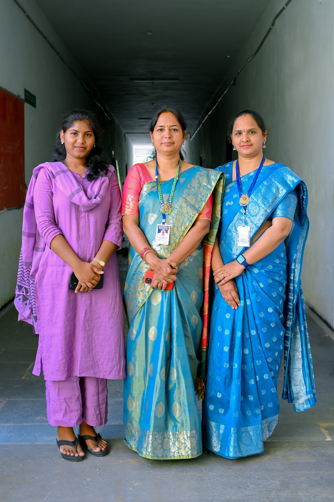

MAHATMA JYOTHIBA PHULE
TELANGANA BACKWARD CLASSES
WELFARE RESIDENTIAL
DEGREE COLLEGE FOR WOMEN
Medchal & Hyderabad

The Bachelor of Business Administration (BBA) department is dedicated to providing quality education in the field of management and business studies. The department focuses on building a strong foundation in core areas such as finance, marketing, human resource management, entrepreneurship, and organizational behavior.The program is designed to equip students with essential managerial, analytical, and decision-making skills required in today’s competitive business environment. Through a combination of theoretical knowledge and practical exposure, students gain insights into real-world business practices.
The department emphasizes skill development through seminars, workshops, case studies, internships, and industry interactions. With the guidance of experienced faculty, students are encouraged to develop leadership qualities, communication skills, and innovative thinking. Graduates of the BBA program are well-prepared to pursue careers in corporate sectors, banking, entrepreneurship, and higher education such as MBA and other professional courses.
